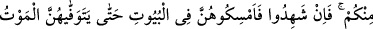
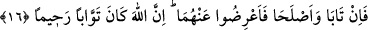

ZİNÂ VE CEZÂSI
15- Kadınlarınızdan fuhuş yapanlara karşı aranızdan dört şâhit getirin. Eğer
şâhitlik ederlerse, o kadınları ölüm alıp götürünceye yâhut Allah onlara bir yol
açıncaya kadar evlerde hapsedin.
16- İçinizden fuhuş yapan her iki tarafa cezâ verin; eğer tevbe eder, uslanırlarsa
artık onlara cezâ verip eziyet etmekten vazgeçin; çünkü Allah tevbeleri çok kabûl
eden ve çok esirgeyendir.
Âyette fuhuş yapanlar için “fuhşu getirenler” ifâdesi kullanılmıştır. Burada
“getirmek” yapmak ve uygulamak anlamındadır. “Fâhişe” kelimesi ise, çirkin fiil
mânâsında olup bununla diğer bütün çirkin davranışlardan daha çirkin olan zinâ fiili
kastedilmektedir. “Kadınlarınızdan” yâni eşlerinizden “fuhuş yapanlara karşı
aranızdan dört şâhit getirin.” Yâni, hür ve erkek mü’minlerden dördünün bu
kadınların zinâ ettiğine şâhidlik etmesini isteyin.
“Eğer” onlar, kadınların bu işi yaptıklarına “şahitlik ederlerse, o kadınları ölüm”
tam olarak “alıp götürünceye”, ruhlarını kabzedinceye kadar demektir. Bu ifâde
ölümden ürkütme ve onu bizzat ruhları kabzeden olarak gösterme mânâsınadır. Veyahut
bu ifâdenin mânâsı, “Ölüm melekleri onları öldürünceye kadar” demektir. “Yâhut Allah
onlara” evlilik gibi –çünkü evlilik insanı zinâdan müstağnî kılar- bu sayede evlerinden
çıkabilecekleri “bir yol açıncaya kadar evlerde hapsedin.” Bu kadınları evlere
hapsedip evleri kendilerine cezâevi yapın.
16- İçinizden fuhuş yapan her iki tarafa cezâ verin; eğer tevbe eder, uslanırlarsa
artık onlara cezâ verip eziyet etmekten vazgeçin; çünkü Allah tevbeleri çok kabûl
eden ve çok esirgeyendir.
“İki taraf” çoğunlukla zinâ eden erkek ve kadındır. Süddî diyor ki: Bu “iki zinâ eden”